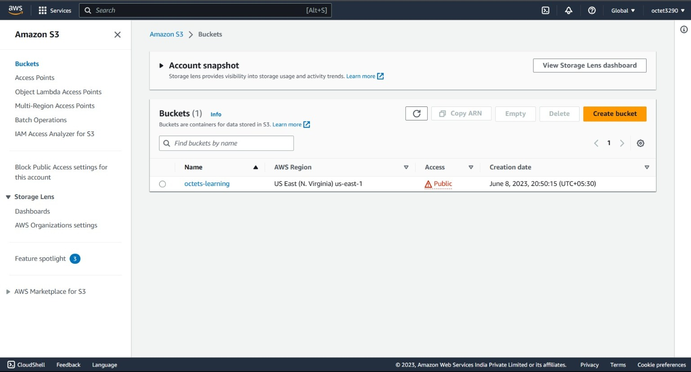
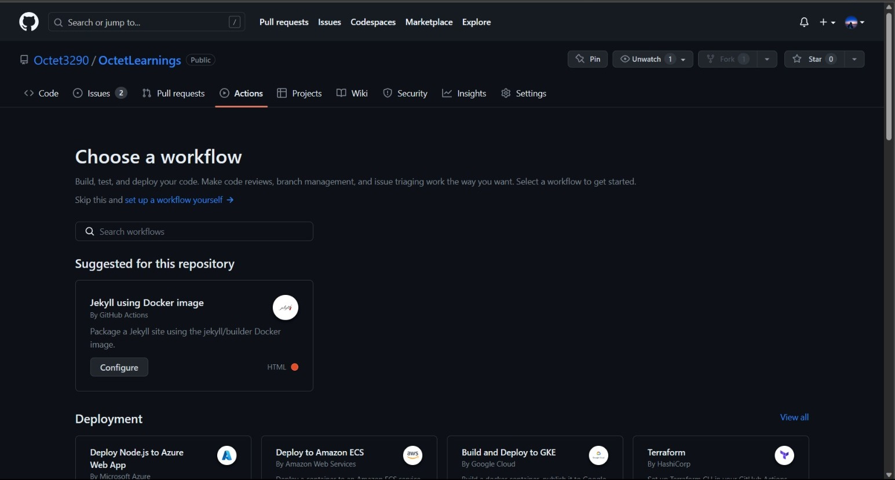
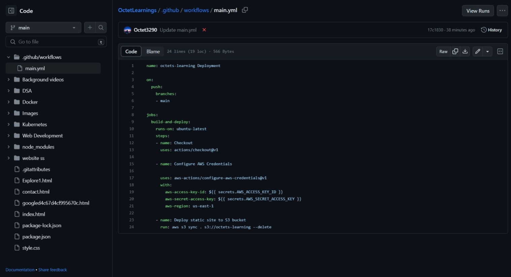
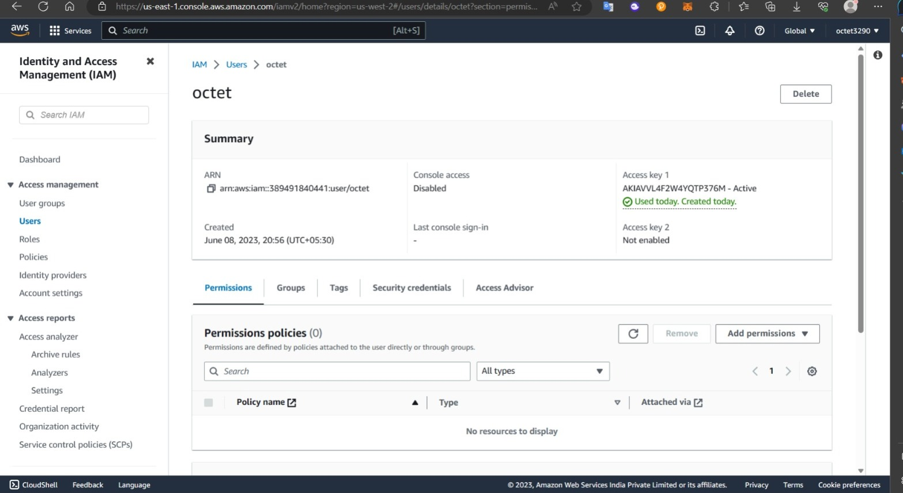
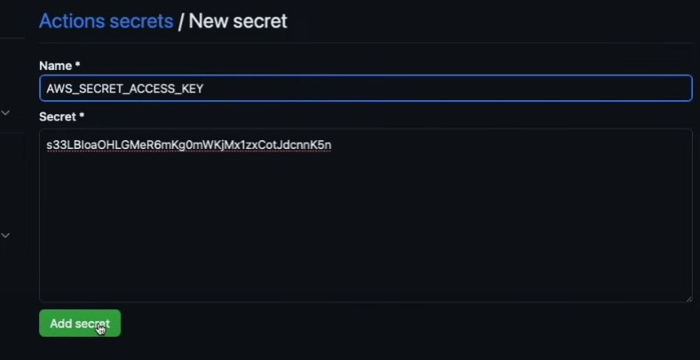
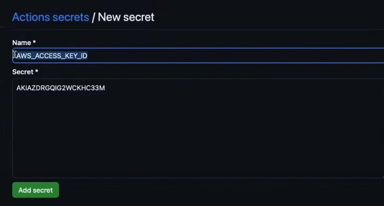

procedure for implementation
1. create bucket on aws s3 with default settings
** Make sure to uncheck "Block public access" while creating bucket**

2. Now go to GitHub Actions -> "go to setup a workflow yourself"

3. Now write the below code in main.yaml"
It will help in copying codebase to AWS S3 objects

4. you can get secrets.AWS_ACCESS_KEY_ID and secrets.AWS_SECRET_ACCESS_KEY_ID THROUGH AWS IAM
- Go to AWS IAM -> users -> create access key -> command line interface -> click on create access key
- Therefore you will get your access key as well as secret access key.

5. Go to settings of your github repository -> secrets and variables
- Add your access key and secret access key.
- Then click on commit changes in main.yaml file


next